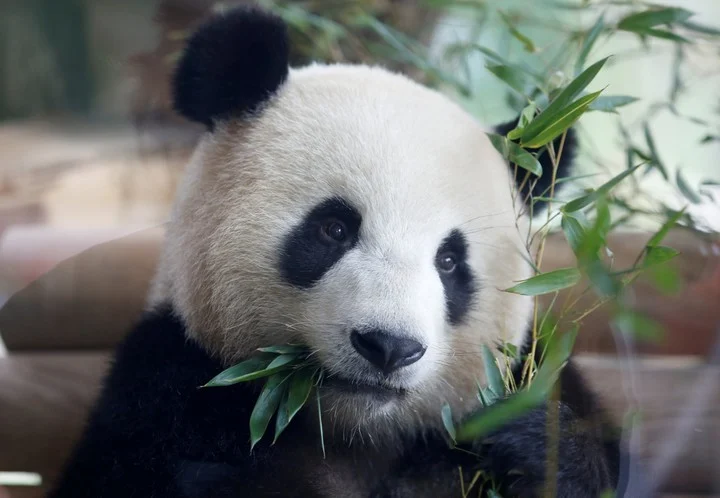
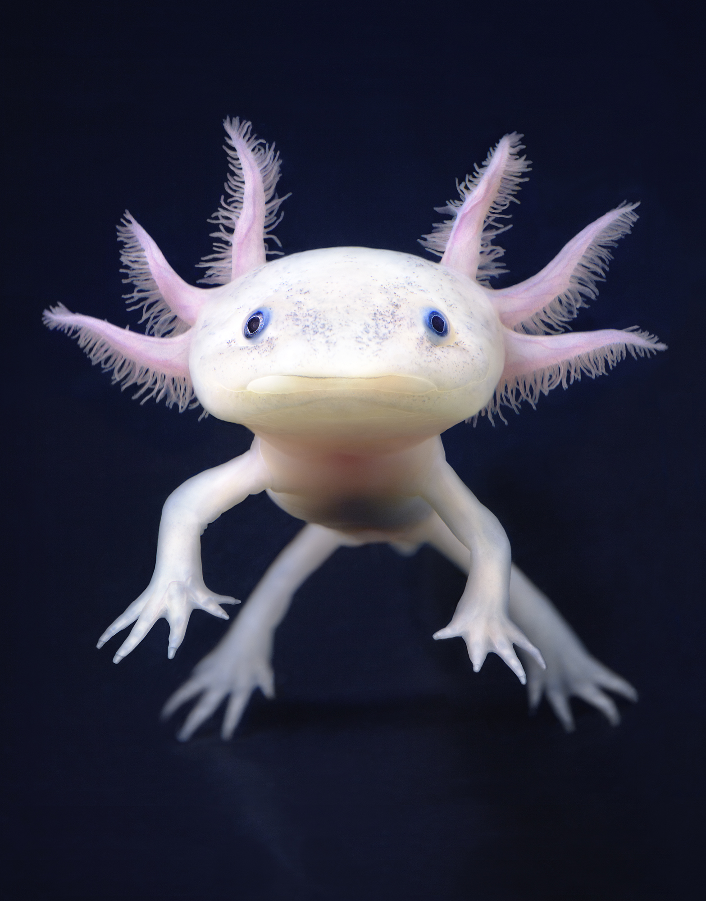
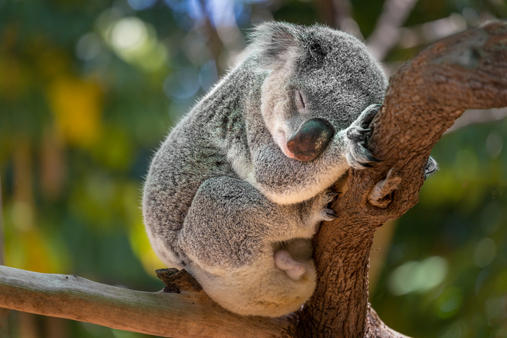
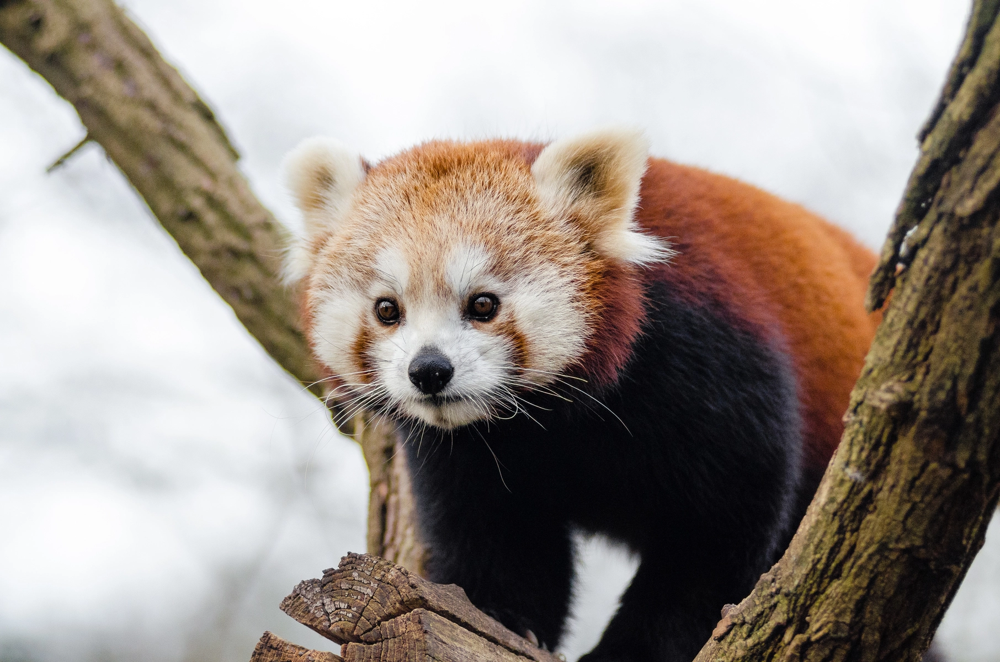
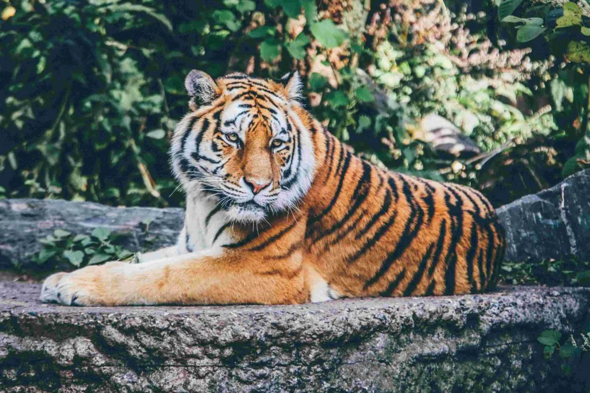

¿Como se considera una especie en peligro de extinción?Se le considera en peligro de extinción a una especie, cuando su existencia y reproducción no se puede desarrollar en ninguna parte del mundo. Es decir que ya nunca se podrá volver a ver. |
| ALGUNAS ESPECIES SON: | |
|---|---|
|  | PANDA |
| AXOLOTL |  |
|  | KOALA |
| PANDA ROJO |  |
|  | TIGRE |
| GUACAMAYA |  |